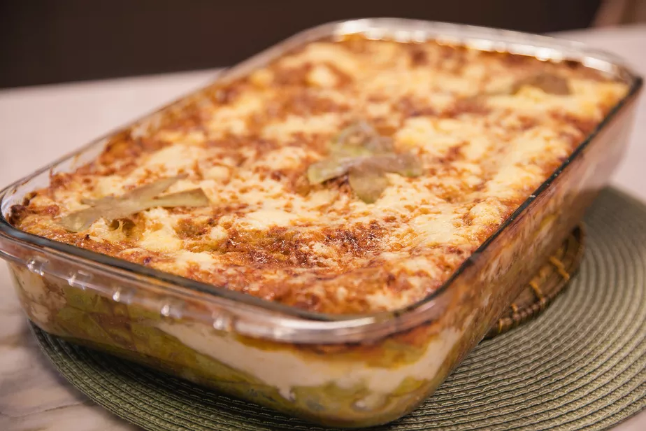

Lasanha

Lasanha de Frango deliciosa
Deliciosa receita de lasanha de frango com molho branco
Até quem é vegetariano vai voltar a comer carne com essa receita.
Fique atento aos ingrediantes abaixo!
Igredientes:
- 1 peito de frango
- 500 g de queijo muçarela fatiado
- 400 g de presunto fatiado
- 1 pacote médio de massa para lasanha (direto ao forno, sem cozimento prévio)
- 1 pote de requeijão cremoso
- 2 caldos de galinha (ou tempero completo sabor galinha)
- 2 copos de leite
- 1 caixa de creme de leite
- 2 colheres de farinha
- 3 colheres de manteiga
- 1 cebola média
Passo a Passo
- Separe todos os ingredientes;
- Aqueça o óleo numa panela;
- Acrescente o peito de frango desfiado, a salsinha desidratada e tempere a gosto;
- Acrescente os sachês de molho de tomate, misture bem e deixe refogar por 5 minutos. Reserve para a montagem;
- Num refratário, faça uma camada com o frango;
- Em seguida, faça uma camada de queijo;
- Faça uma camada de massa, sem deixar que fiquem sobrepostas. Repita o processo até obter o número de camadas desejado;
- Finalize com uma camada de frango com o queijo parmesão salpicado por cima;
- Leve ao forno preaquecido a 180 graus por aproximadamente 25 minutos, observando sempre o tempo de cozimento da massa. E a receita está pronta para servir!